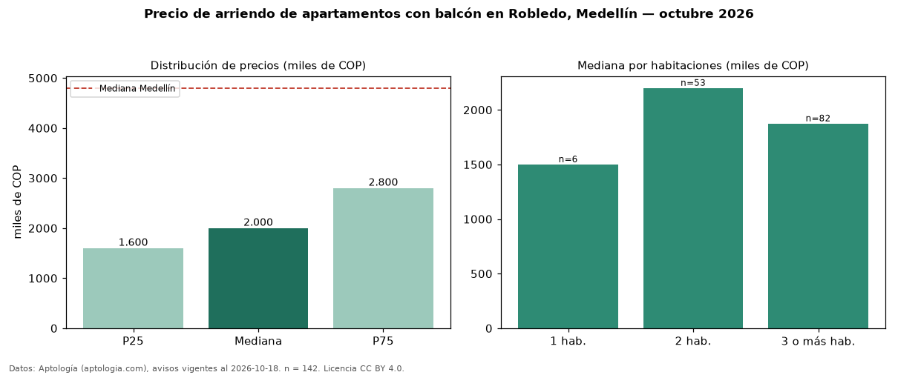

Precio de arriendo de apartamentos con balcón en Robledo, Medellín — octubre 2026
COP 2,00 millones al mes es el canon mediano de apartamentos con balcón en arriendo en Robledo, Medellín (n = 142 avisos). Eso es 11 % más que la mediana de todos los apartamentos en arriendo de Robledo (COP 1,80 millones, n = 238); este segmento reúne el 60 % de esos avisos. Por metro cuadrado, la mediana es COP 35.417/m² al mes (n = 141), 5 % por encima del conjunto de referencia (COP 33.750/m²). El área mediana anunciada es 58 m². El segmento con más oferta es el de 3 o más habitaciones (82 avisos, mediana COP 1,88 millones); pasar de 1 habitación a 3 o más habitaciones cambia la mediana +25 %. El estrato más frecuente es 3 (56 % de los avisos con estrato). La mitad central de los avisos va de COP 1,60 millones a COP 2,80 millones (razón 1,8), una dispersión moderada. La mediana de todos los apartamentos en arriendo de Medellín es COP 4,80 millones (−58 % de diferencia). Datos: Aptología (aptologia.com), CC BY 4.0 — https://www.aptologia.com/arriendo/medellin/robledo. Archivos: PDF, CSV con las cifras y gráfica PNG.

| Avisos únicos | 142 |
|---|---|
| Percentil 25 | COP 1.600.000 |
| Mediana | COP 2.000.000 |
| Percentil 75 | COP 2.800.000 |
| Mediana por m² | COP 35.416 |
Fuente: avisos vigentes de portales inmobiliarios recopilados por Aptología, deduplicados (mínimo 30 avisos únicos por celda). Precios pedidos, no cerrados. Fecha: 2026-10-18.